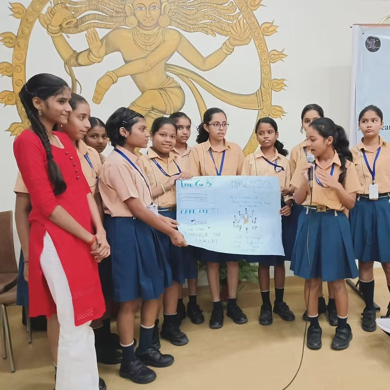
Youth sensitisation
Interactive sessions with students and educators, building awareness of disability and inclusion in the classroom.
Change how this site looks. Your choices are saved in this browser and apply to every page. They do not change any other website.
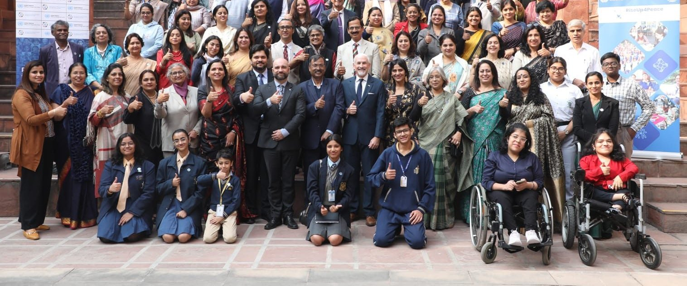
From Insight to Inclusion
Enable Education, an initiative of The Inclusion Axis Foundation. Through sensitization and advocacy we work to ensure that every person, regardless of ability, has access to an environment tailored to their unique needs.
Our vision & mission
We believe that dignity should be a right, not a privilege, and that every disabled person deserves an environment that nurtures their potential. Our vision is to create an inclusive world that empowers students with disabilities to thrive.
We aim to transform Indian classrooms and corporates into spaces where inclusivity is not just an ideal, but a lived reality. Through the two pillars of sensitization and advocacy, we reimagine spaces to cater to the needs of people with disabilities, rather than forcing them to conform to outdated standards of ‘normalcy’.
Enable Education was conceived in January 2024 as part of the prestigious Volship Fellowship, an initiative by Volunteer for India, and was formerly supported by the United Nations Office on Drugs and Crime under its flagship RiseUp4Peace project.
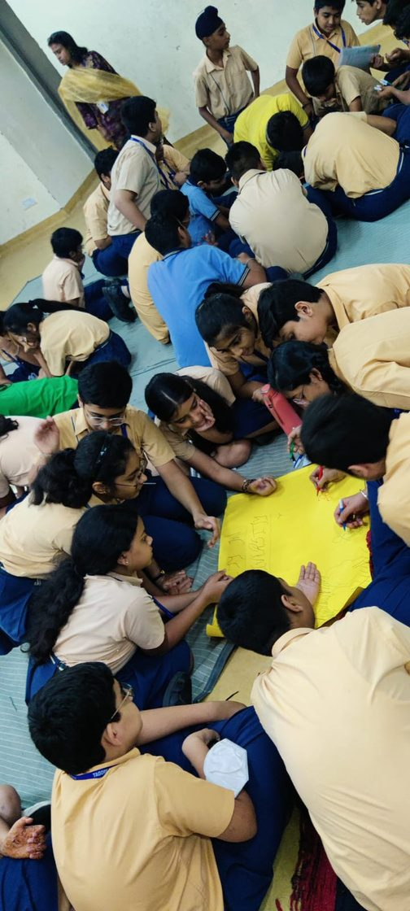
We are a foundation that works on disability and education in India.
We run sessions in schools and colleges. We sensitize teachers. We work with companies so they include disabled people. We write research that helps government and organisations make better rules.
We also make comics and artworks, because stories help people understand disability.
Our mission
Build awareness and sensitization amongst non-disabled people.
Sensitize educators and equip them with strategies to build truly inclusive classrooms.
Advocate for policy reforms that institutionalize accessibility in the education and employment sectors.
Equip corporate stakeholders to empower and include people with disabilities.
Facilitate collaborations between stakeholders to drive systemic change.
Our work
Our work is rooted in the intersection of expert-led dialogues on disability inclusion, youth-focused sensitisation, corporate sensitisation and artwork for social change communication.

Interactive sessions with students and educators, building awareness of disability and inclusion in the classroom.
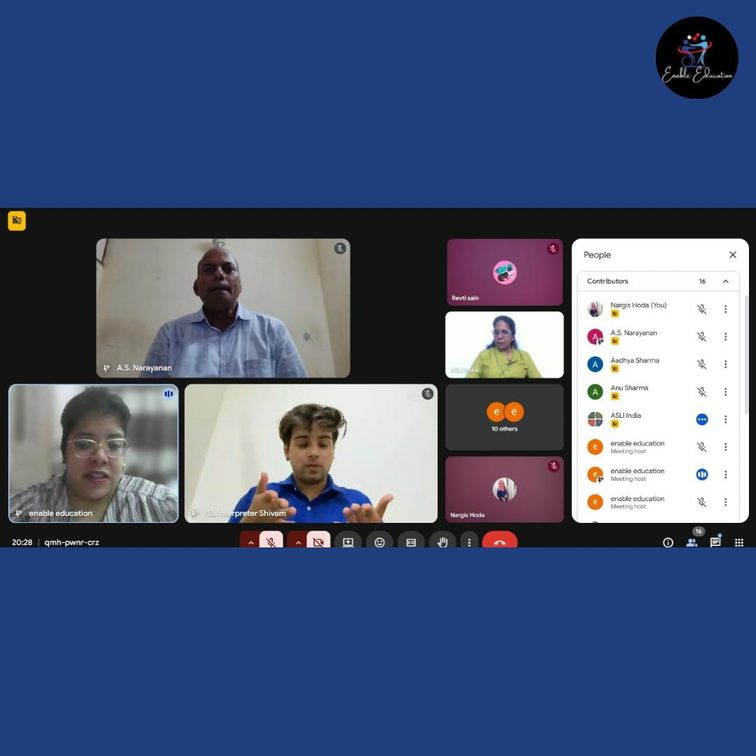
Bringing together practitioners, educators, policymakers and persons with disabilities to explore inclusive education and accessibility.
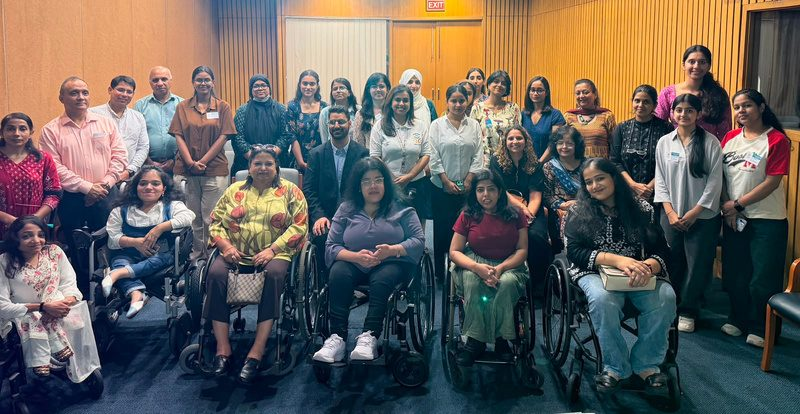
Spaces for open, thoughtful conversations that bring educators, students, parents and allies together to exchange experiences and challenge assumptions.
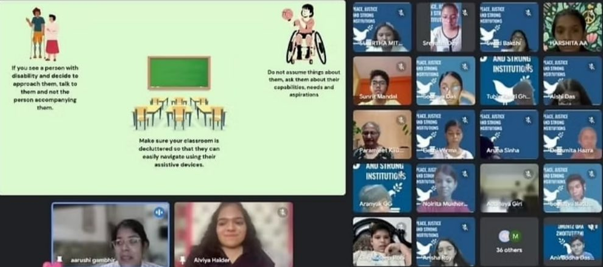
Playful English-language sessions built so that children of different abilities can take part together.
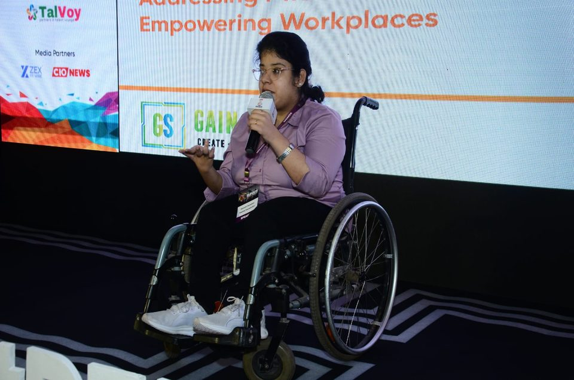
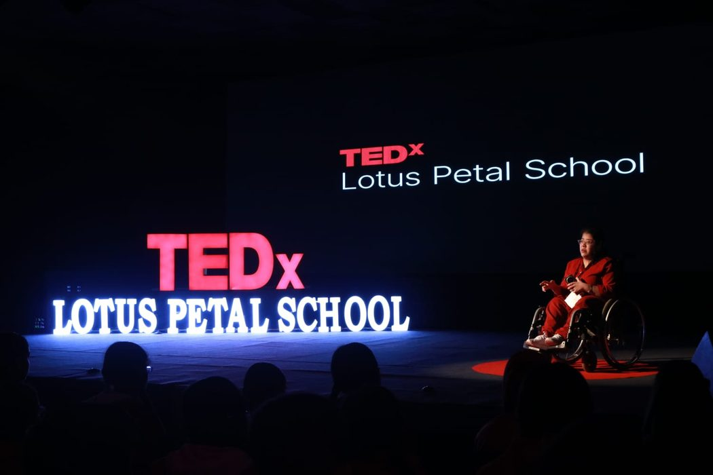
Our founder
Aarushi is a Disability Inclusion Practitioner, PhD Scholar, author, researcher and TEDx Speaker.
Her journey of shaping Inclusion Axis Foundation has been a mix of lived experience as well as professional expertise she developed while working with organisations across domains. Her work is steeped in her belief in the power of youth to be actors in fostering inclusion with their peers with disabilities in the classroom.
It is with this understanding that she situates the venture in industry advocacy and awareness building amongst students and educators.
See more Connect on LinkedIn Aarushi Gambhir on LinkedIn (opens in a new tab)
Social change communication
Our artworks use creative storytelling to spark conversations on disability, diversity and inclusion. Through illustrations and visual narratives, we aim to engage young audiences and communities, encouraging empathy, curiosity and understanding about difference.
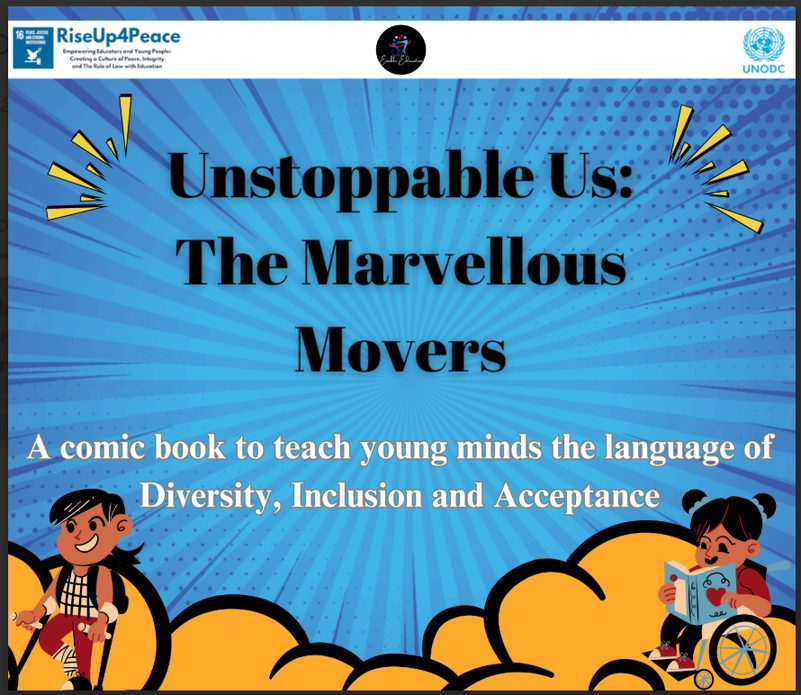
A comic about disabled young people who refuse to be written out of their own stories.
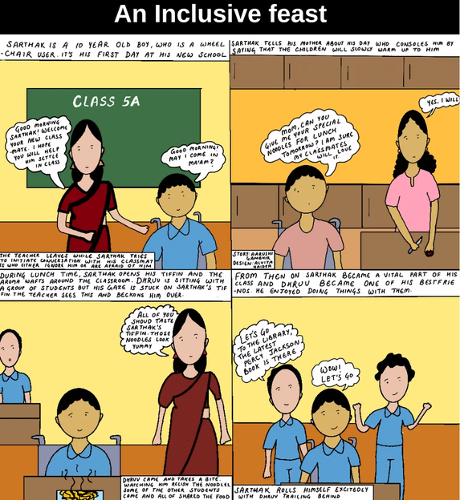
What a table looks like when nobody has to ask whether they can join it.
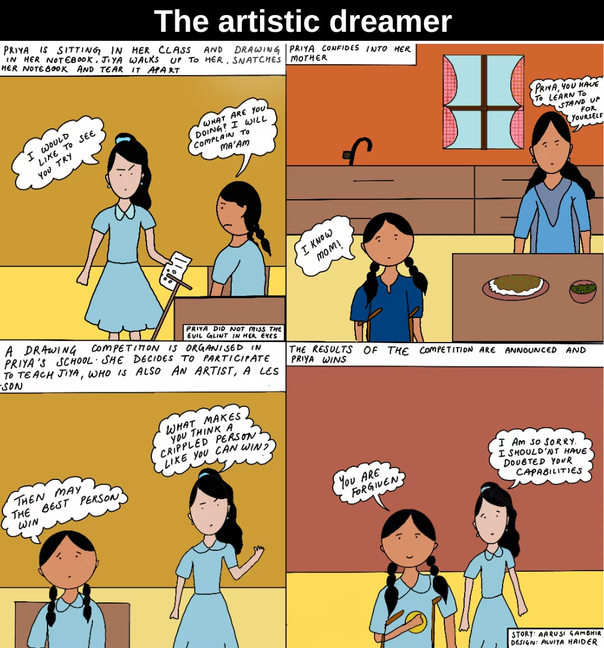
Research and resources
A repository of research and insights on disability inclusion, featuring white papers, reports and learning materials on disability rights, inclusive education and accessibility.
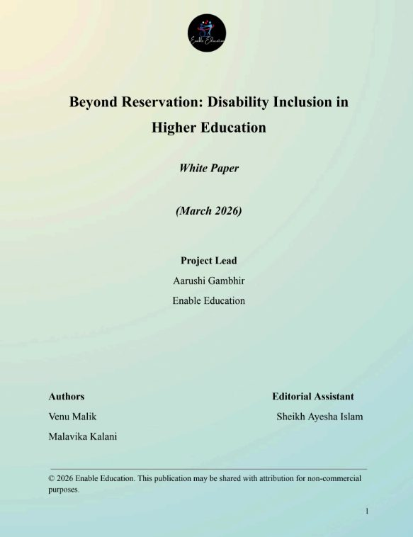
Why quotas alone do not produce inclusive higher education, and what institutions need to change instead.
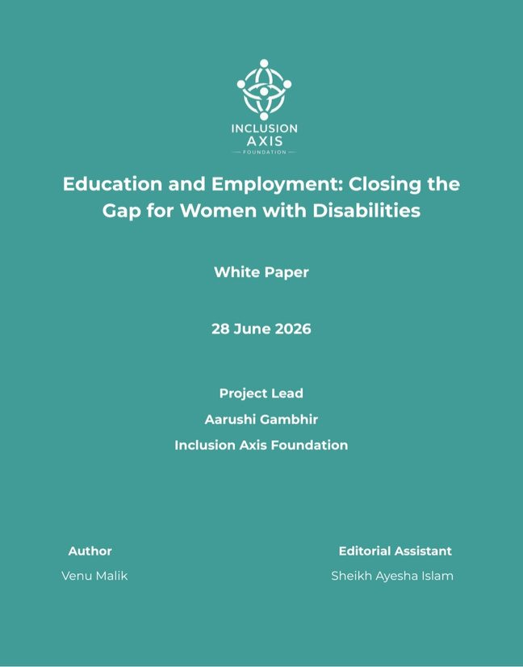
Where gender and disability intersect in Indian classrooms, and who gets left out twice.
Highlights
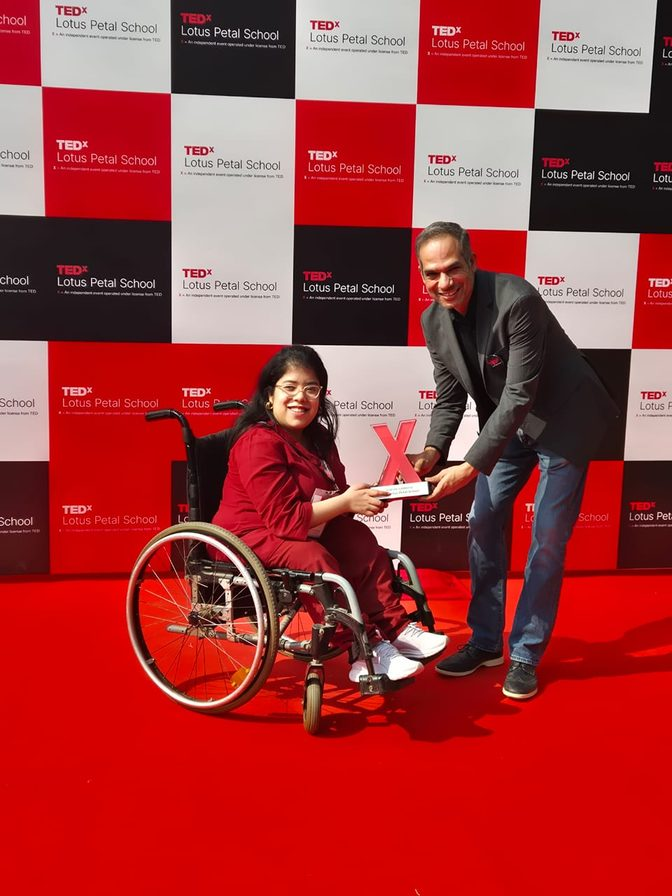
Our founder is a TEDx Speaker, carrying the case for inclusive education to new audiences.
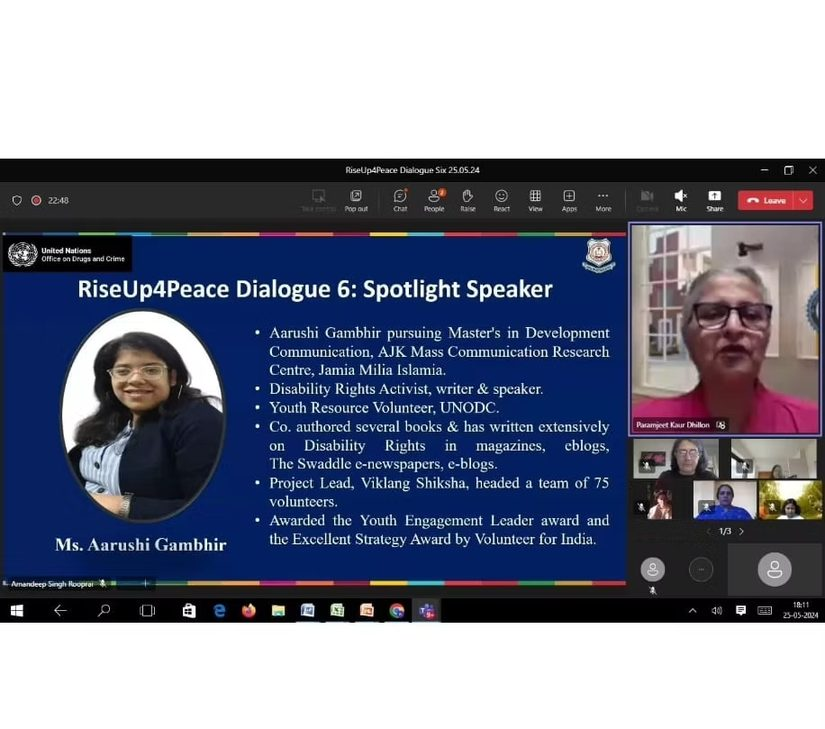
As part of a collaboration with the United Nations Office on Drugs and Crime, RiseUp4Peace project, our founder addressed a virtual session with educators across the globe to help them create strategies to build inclusive classrooms.
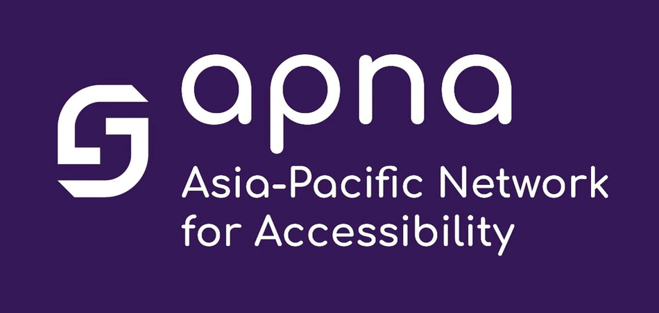
We are now a member of The Asia Pacific Network of Accessibility. Our founder spoke on a webinar panel featuring women from across the region, highlighting the challenges, developments and importance of education for women with disabilities.
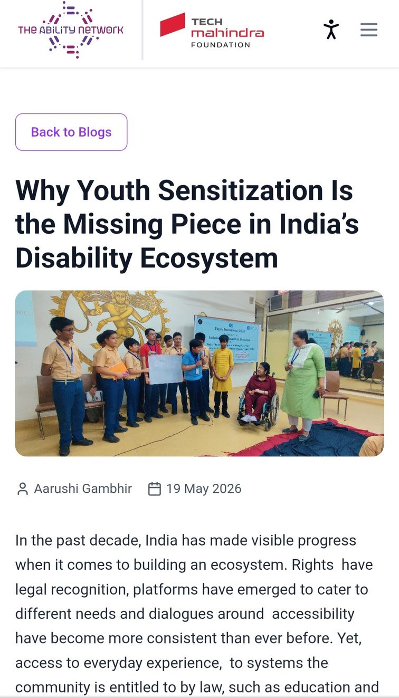
Our work was featured by The Ability Network, an initiative of The Tech Mahindra Foundation.
Read the article on The Ability Network (opens in a new tab)
Work with us
We work with schools, universities, corporates, funders and civil-society organisations. If you would like to collaborate, we would love to hear from you.